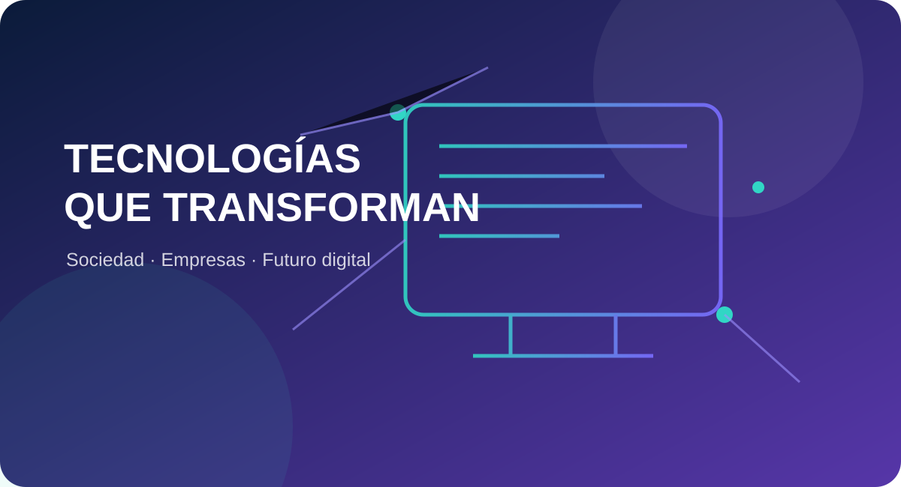

Personas
PersonasSociedad conectada
Facilita la comunicación, el acceso a información, la educación virtual y la participación ciudadana.
Conocer más →La web conecta personas, transforma organizaciones y abre oportunidades para aprender, emprender e innovar.
Explorar el impactoVer negocios
Las tecnologías web incluyen herramientas, estándares y servicios que permiten crear y utilizar contenidos y aplicaciones a través de internet.
PersonasFacilita la comunicación, el acceso a información, la educación virtual y la participación ciudadana.
Conocer más → Empresas
EmpresasImpulsa el comercio electrónico, la automatización, el marketing digital y nuevos modelos de negocio.
Conocer más → Innovación
InnovaciónLa inteligencia artificial, la nube y las experiencias inmersivas plantean nuevas oportunidades y retos.
Conocer más →Porque reduce barreras geográficas, acelera procesos y permite que personas y organizaciones colaboren en tiempo real. Su impacto depende de que se utilice de manera segura, inclusiva y responsable.
Recurso audiovisual breve elaborado para este proyecto.
| Ámbito | Aplicación | Beneficio | Reto |
|---|---|---|---|
| Educación | Aulas virtuales | Aprendizaje flexible | Brecha digital |
| Comercio | Tiendas en línea | Mayor alcance | Protección de datos |
| Salud | Portales y citas digitales | Acceso y rapidez | Privacidad |
| Gobierno | Trámites electrónicos | Menos desplazamientos | Accesibilidad |